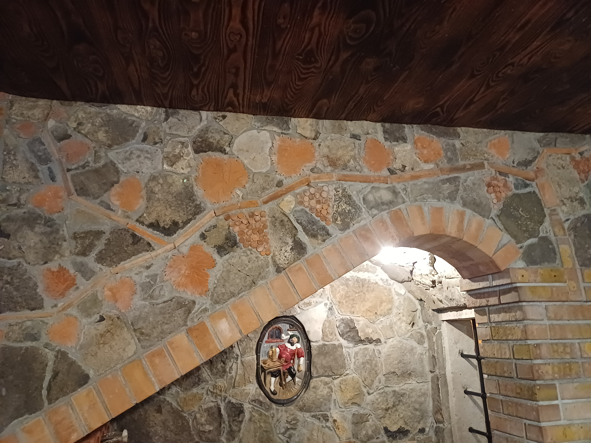
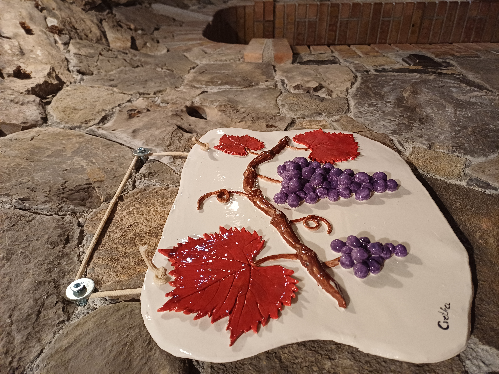

Okus Krasa.
Brestovica pri Komnu · Kras
Vina, ki nosijo značaj Krasa.
Vsaka steklenica je izraz kraške zemlje, časa in dela, ki stoji za njo.
V naši kleti nastajajo vina, ki spoštujejo tradicijo in hkrati govorijo s svojim značajem.
Iz Krasa. Iz naše kleti. V vaš kozarec.
Kjer kamen
sreča trto.
Kras ni kraj, ki bi se razkril na prvi pogled. Je pokrajina kamna, rdeče zemlje in odprtega neba.
Kjer burja oblikuje pokrajino, sonce dozoreva grozdje, človek pa se že stoletja uči živeti z zemljo.
Tu nič ne pride zlahka. Prav zato ima vse svoj značaj.
Izraz
značaja.
Vino, ki ne potrebuje pretiranih besed. Prepoznaven značaj in jasna identiteta v vsakem kozarcu.
Teran
Teran je vino izrazitega značaja, ki svojo prepoznavnost gradi na ravnovesju med močjo, svežino in sadnostjo. Njegova globoka rdeča barva je rezultat nežnega izvlečka barvil iz kožic grozdnih jagod, ki že na pogled napovejo njegovo intenzivnost.
V ustih je živahen in poln, z izrazito svežino, ki lepo uravnoteži njegovo strukturo. Sadne note se prepletajo z značilno svežino in ustvarjajo dolg, čist ter eleganten zaključek.
Prepoznaven po okusu.
Vstopite
v našo klet.

Kjer vino
dobiva svoj značaj.
V naši kleti se tradicija sreča s časom. Tukaj vino dozoreva počasi, brez hitenja, dokler ne doseže svojega pravega značaja.

Ena klet.
Ena zgodba.
Vinarstvo Filipčič je povezano s krajem, v katerem živimo in ustvarjamo.
Vino pri nas ni samo izdelek. Je del doma, družine in načina življenja.
Znanje se prenaša iz roda v rod, vsaka generacija pa v zgodbo doda nekaj svojega.
Čas ne ustvarja
samo vina.
Ustvarja spomin. Ustvarja značaj. Ustvarja zgodbo, ki jo lahko nato delimo z drugimi.
Pridite.
Poskusite.
Spoznajte Kras.
Kras, Slovenija